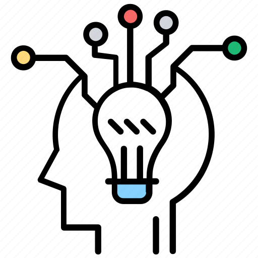
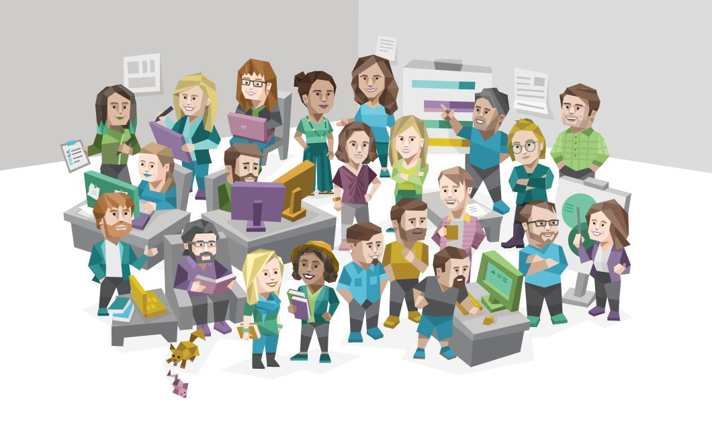
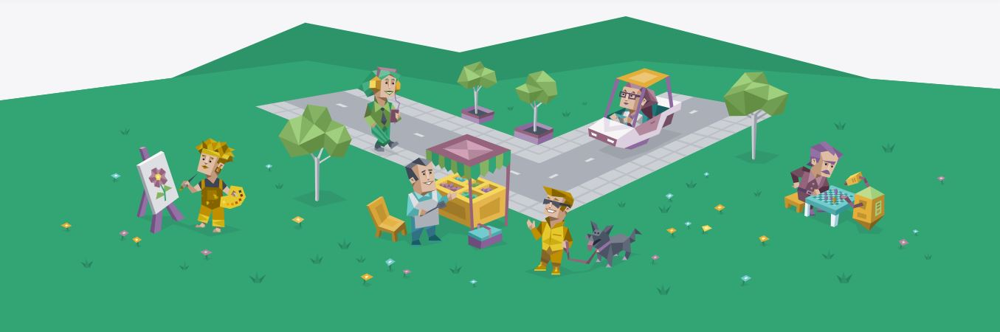

Home
Tipe kepribadian
Introvert vs Extrovert
Tes Kepribadian
Tentang Kami

Introvert vs Extrovert ?

Kamu Introvert atau Extrovert?
Mulai Tes
Pertanyaan
/21
A
B
C
D
< Sebelumnya
Selanjutnya >
Mulai Ulang
Beberapa karakter yang cocok :
Jawaban yang kamu pilih

"Jika kamu sudah tua, jangan mencoba mengubah diri sendiri, ubahlah lingkunganmu."
- BF Skinner